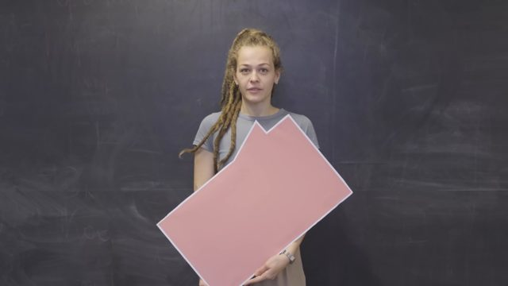
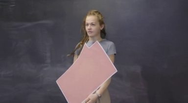
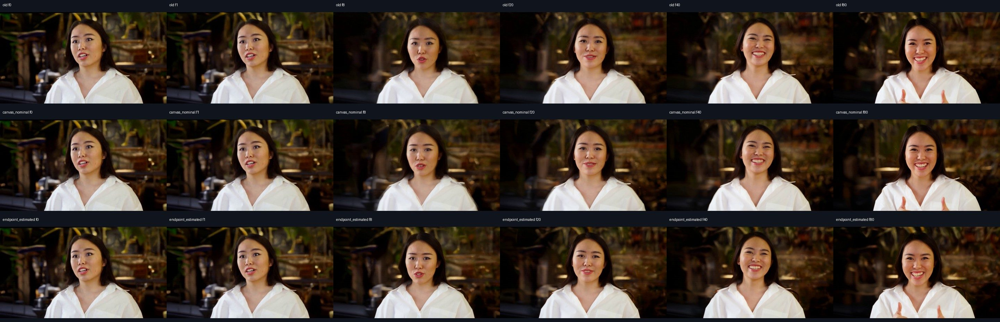
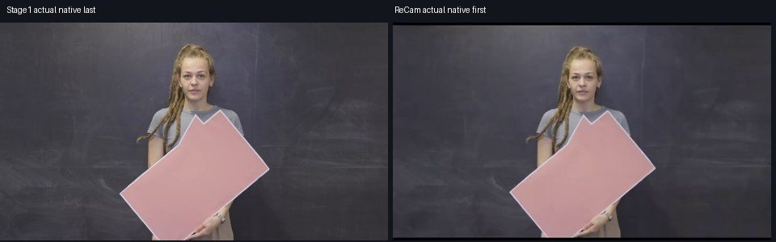
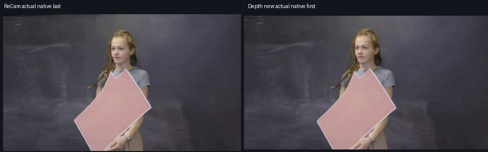
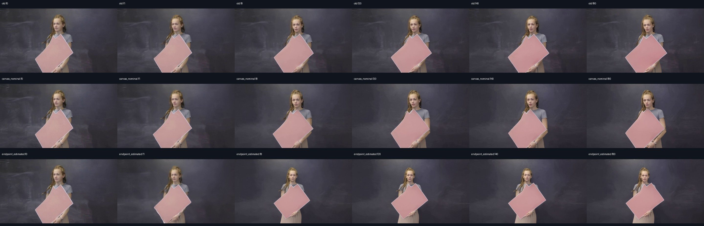
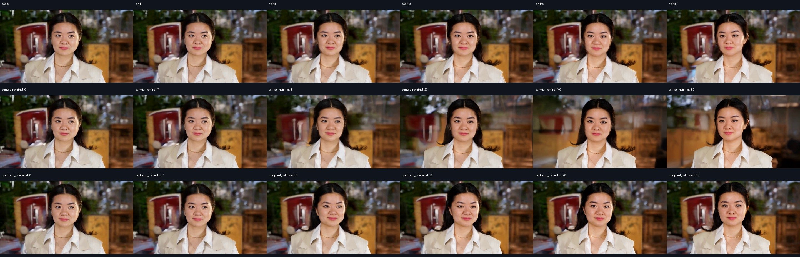

Stage2 · ReCamMaster
统一输入
以Stage1末帧构造81帧冻结内容视频，另输入相机轨迹。ReCam没有独立首关键帧约束参数，生成首帧是否贴合需验收。
Stage1真实末帧，冻结内容，右绕约30°

Stage1真实末帧，冻结内容，右绕约30°

Stage1真实末帧，冻结内容，右绕约30°

Stage3 · DepthDirector
统一输入
首图：对应ReCam原生末帧，作为原生首时间latent约束及外观条件。动作：原片t*至结尾完整81帧。Prompt：固定在首图机位，继续源动作，背景及相机保持静止。所有对照的真实首图、原始动作参考SHA256相同；修复前后内部画布预处理不同。

打开完整尺寸文件 · 81 帧 · 全帧PTS保留 · 19 KB预览
完整prompt
At the fixed new camera viewpoint shown by the supplied first frame, continue the exact order of person and object actions from the supplied source video after the highlight frame. Maintain the same person's identity, clothing, pose continuity, background geometry and lighting. The camera must stay stationary at this new viewpoint. Do not keep the action frozen, invent different motion, change the person, move the camera, or rebuild the scene.

打开完整尺寸文件 · 81 帧 · 全帧PTS保留 · 7 KB预览
完整prompt
At the fixed new camera viewpoint shown by the supplied first frame, continue the exact order of person and object actions from the supplied source video after the highlight frame. Maintain the same person's identity, clothing, pose continuity, background geometry and lighting. The camera must stay stationary at this new viewpoint. Do not keep the action frozen, invent different motion, change the person, move the camera, or rebuild the scene.

打开完整尺寸文件 · 81 帧 · 全帧PTS保留 · 12 KB预览
完整prompt
At the fixed new camera viewpoint shown by the supplied first frame, continue the exact order of person and object actions from the supplied source video after the highlight frame. Maintain the same person's identity, clothing, pose continuity, background geometry and lighting. The camera must stay stationary at this new viewpoint. Do not keep the action frozen, invent different motion, change the person, move the camera, or rebuild the scene.
修复前 · 原有数值30°控制

对照 · 统一画布及内参，数值30°控制
试修复 · 统一画布及内参，末帧估计机位控制
运行成功 · 待验收
打开完整尺寸文件 · 81 帧 · 全帧PTS保留 · 31 KB预览
诊断：机位估计不可靠，特征稀疏；仅尝试平移细化，不能标为已对齐。
运行成功 · 待验收
打开完整尺寸文件 · 81 帧 · 全帧PTS保留 · 10 KB预览

原生f0未替换
运行成功 · 待验收
打开完整尺寸文件 · 81 帧 · 全帧PTS保留 · 17 KB预览
试修复版 · 三阶段拼接与真实接缝
主预览保留各阶段原生时间，与上方单阶段同速；另提供按源动作帧率显示的副本，只改时间戳。不丢帧、不补帧、不融合接缝。重点同时检查首帧贴合、后续视角、人物动作及背景。
三阶段拼接 · 末帧估计机位版
六个时点抽帧：修复前、画布对照、机位细化版均从侧向首帧较快回到正面；机位细化未解决主退化。
打开完整尺寸文件 · 422 帧 · 全帧PTS保留 · 103 KB预览
Stage1末帧 → Stage2首帧
Stage2末帧 → Stage3首帧
三组原生结果时序对照

特征稀疏，异常99.65°机位已在推理前拒绝；平移细化诊断版仍出现人物/道具额外缩小及位移，不能作为对齐成功。
打开完整尺寸文件 · 313 帧 · 全帧PTS保留 · 30 KB预览
Stage1末帧 → Stage2首帧

Stage2末帧 → Stage3首帧

三组原生结果时序对照

画布对照出现背景明显漂移；机位细化版较该对照保留了更多背景位置，但仍需检查人物视角和动作，未判质量通过。
打开完整尺寸文件 · 400 帧 · 全帧PTS保留 · 80 KB预览
Stage1末帧 → Stage2首帧
Stage2末帧 → Stage3首帧
三组原生结果时序对照
